2.5 Group 7
Halogen trends, displacement, redox reactions and halide tests
2.5 Group 7
本页对应 2.5 Group 7.pdf.pdf。Group 7 elements 也称为 halogens，本章重点包括 periodic trends、halogen displacement、disproportionation、chlorine water、concentrated sulfuric acid reactions 以及 silver nitrate tests。专业词汇保留 English。
Learning objectives
学完本页后，你应该能够：
- explain trends in colour、state、melting / boiling point、volatility and electronegativity；
- explain why oxidising power and reactivity decrease down Group 7；
- use halogen displacement reactions as evidence for relative reactivity；
- write ionic equations for cold / hot alkali disproportionation；
- explain chlorine use in water purification；
- distinguish chloride、bromide and iodide using silver nitrate and ammonia。
2.5.1 Trends of the Group 7 elements
Physical states and colours
Halogens are non-metal elements with diatomic molecules：F₂、Cl₂、Br₂ and I₂。Going down the group：
- colour becomes darker；
- melting point and boiling point increase；
- volatility decreases；
- London dispersion forces become stronger。
At room temperature：
- fluorine：pale yellow gas；
- chlorine：green-yellow gas；
- bromine：orange-brown liquid；
- iodine：grey-black solid producing purple vapour when warmed。
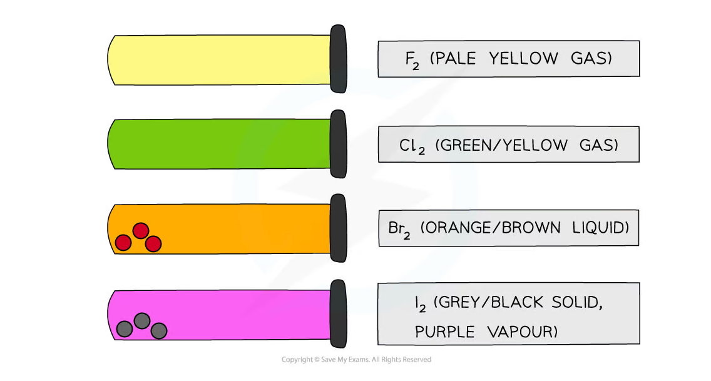
Melting and boiling points
Halogen molecules are simple molecular substances。They have weak instantaneous dipole-induced dipole forces between molecules。Down the group，number of electrons and molecular size increase，electron clouds become more polarizable，so dispersion forces become stronger。
More energy is required to separate molecules，therefore melting / boiling points increase and volatility decreases。
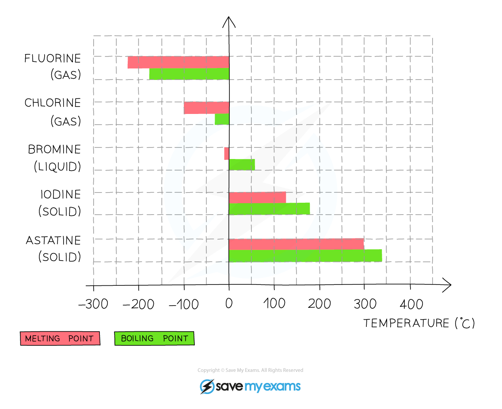
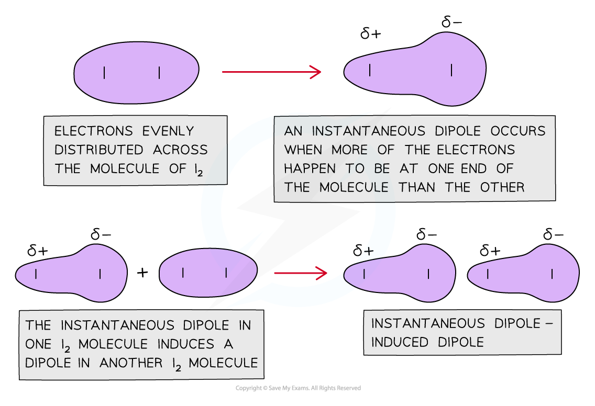
Electronegativity and oxidising power
Electronegativity 是 an atom’s ability to attract bonding electrons。Going down Group 7，atomic radius and shielding increase，so attraction for an incoming electron becomes weaker。
因此：
- electronegativity decreases down the group；
- ability to gain an electron decreases；
- oxidising power decreases；
- reactivity decreases。
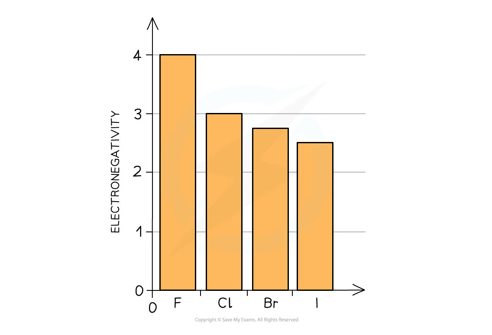
Halogen atoms act as oxidising agents by gaining one electron：
\[ \ce{X2 + 2e- -> 2X-} \]
Fluorine is the strongest oxidising agent in Group 7；iodine is the weakest of the common halogens。
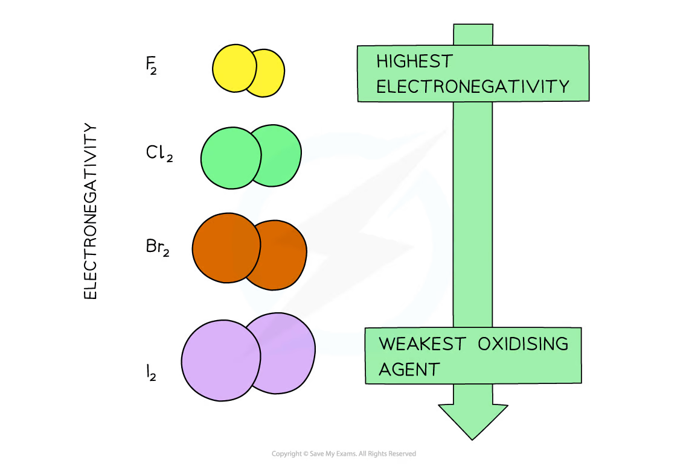
Reactions with hydrogen
The vigour of reaction with hydrogen decreases down the group：
| Halogen | Equation | Observation |
|---|---|---|
| fluorine | H₂ + F₂ → 2HF |
explosive even in cool, dark conditions |
| chlorine | H₂ + Cl₂ → 2HCl |
explosive in sunlight |
| bromine | H₂ + Br₂ → 2HBr |
slow; requires heating |
| iodine | H₂ + I₂ ⇌ 2HI |
equilibrium mixture on heating |
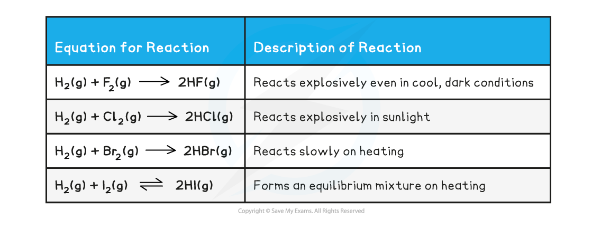
2.5.2 Halogen displacement reactions
Principle
A more reactive halogen displaces a less reactive halogen from an aqueous solution of its halide。This is a redox reaction：
\[ \ce{X2 + 2Y- -> 2X- + Y2} \]
where X₂ is the more reactive halogen。
Reactivity order：
\[ \ce{F2 > Cl2 > Br2 > I2} \]
Chlorine displacing bromide and iodide
Chlorine displaces bromide：
\[ \ce{Cl2(aq) + 2Br-(aq) -> 2Cl-(aq) + Br2(aq)} \]
Chlorine also displaces iodide：
\[ \ce{Cl2(aq) + 2I-(aq) -> 2Cl-(aq) + I2(aq)} \]
Bromine displaces iodide：
\[ \ce{Br2(aq) + 2I-(aq) -> 2Br-(aq) + I2(aq)} \]
Observations：
- bromine formed gives yellow-orange / orange-brown colour in aqueous solution；
- iodine formed gives brown aqueous solution；
- iodine is purple in an organic solvent such as cyclohexane；
- an organic solvent makes halogen colours easier to observe because halogens dissolve well in that layer。
Redox interpretation
In Cl₂ + 2Br⁻ → 2Cl⁻ + Br₂：
- chlorine changes
0 → -1，so chlorine is reduced and acts as the oxidising agent； - bromine changes
-1 → 0，so bromide is oxidised and acts as the reducing agent。
No oxidation-number change occurs for spectator ions such as Na⁺ or K⁺。
2.5.3 Redox reactions of the halogens
Reactions with metals
Halogens oxidise metals to form ionic metal halides：
\[ \ce{2Na(s) + Cl2(g) -> 2NaCl(s)} \]
\[ \ce{Ca(s) + Br2(l) -> CaBr2(s)} \]
Metal oxidation number increases，while halogen oxidation number decreases to -1。Therefore halogens act as oxidising agents。
Reactions with iron(II) ions
Chlorine and bromine are strong enough oxidising agents to oxidise iron(II) to iron(III)：
\[ \ce{Cl2 + 2Fe^{2+} -> 2Cl- + 2Fe^{3+}} \]
\[ \ce{Br2 + 2Fe^{2+} -> 2Br- + 2Fe^{3+}} \]
Iodine is not a strong enough oxidising agent for this reaction。Instead，iron(III) can oxidise iodide to iodine：
\[ \ce{I2 + 2Fe^{2+} -> 2I- + 2Fe^{3+}} \]
Chlorine with alkali - disproportionation
Chlorine undergoes disproportionation in alkali：the same chlorine species is simultaneously oxidised and reduced。
Cold dilute alkali
At about 15 °C：
\[ \ce{Cl2 + 2OH- -> Cl- + ClO- + H2O} \]
Chlorine changes 0 → -1 in Cl⁻ and 0 → +1 in ClO⁻。
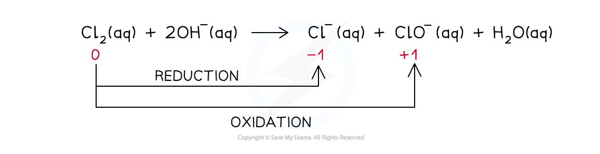
Hot concentrated alkali
At about 70 °C：
\[ \ce{3Cl2 + 6OH- -> 5Cl- + ClO3- + 3H2O} \]
Here chlorine is oxidised from 0 → +5 in chlorate(V) and reduced from 0 → -1 in chloride。
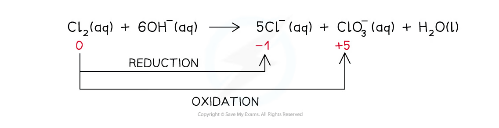
Chlorine in water purification
Chlorine reacts reversibly with water：
\[ \ce{Cl2(aq) + H2O(l) <=> HCl(aq) + HClO(aq)} \]
HClO can dissociate：
\[ \ce{HClO(aq) <=> H+(aq) + ClO-(aq)} \]
HClO and ClO⁻ are effective sterilising agents because they kill microorganisms。The reaction is also disproportionation：chlorine is reduced to chloride and oxidised to chlorine(I) species。
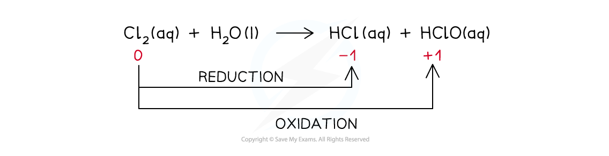
2.5.4 Other reactions of the halogens
Halide ions with concentrated sulfuric acid
Concentrated sulfuric acid is an acid and, for bromide / iodide, an oxidising agent。These reactions produce toxic gases and must be performed in a fume cupboard。
General acid-base step：
\[ \ce{H2SO4 + X- -> HX + HSO4-} \]
Chloride
Chloride gives hydrogen chloride gas，seen as white fumes：
\[ \ce{H2SO4(l) + NaCl(s) -> HCl(g) + NaHSO4(s)} \]
No redox reaction occurs because sulfur remains at +6。
Bromide
Hydrogen bromide is oxidised to bromine，while sulfuric acid is reduced to sulfur dioxide：
\[ \ce{2HBr + H2SO4 -> Br2 + SO2 + 2H2O} \]
Reddish-brown bromine vapour is observed。
Iodide
Hydrogen iodide is a stronger reducing agent and can reduce sulfuric acid through several stages：
\[ \ce{2HI + H2SO4 -> I2 + SO2 + 2H2O} \]
Further reduction can produce sulfur or hydrogen sulfide：
\[ \ce{6HI + H2SO4 -> 3I2 + S + 4H2O} \]
\[ \ce{8HI + H2SO4 -> 4I2 + H2S + 4H2O} \]
Observations include purple iodine vapour、yellow sulfur solid and the unpleasant smell of hydrogen sulfide。All gases are toxic；use a fume cupboard。
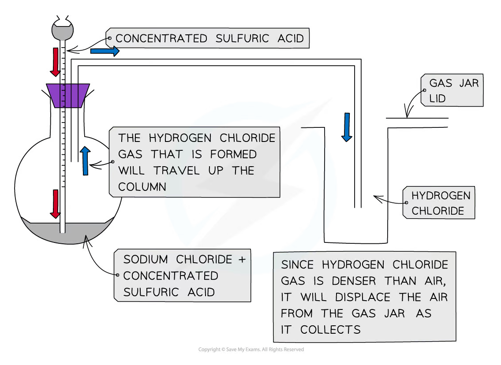
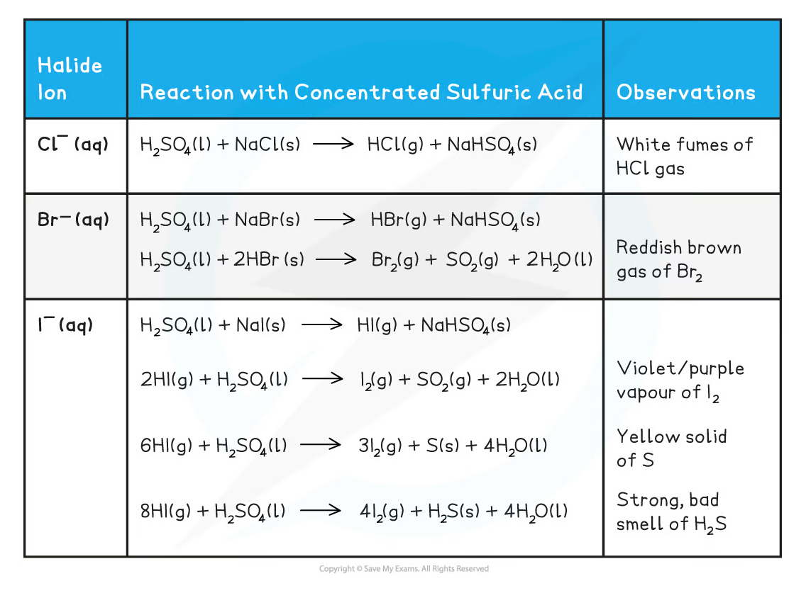
Silver nitrate and ammonia test for halide ions
To identify an unknown halide：
- dissolve the sample in dilute nitric acid；
- add aqueous silver nitrate；
- observe silver halide precipitate colour；
- add dilute ammonia, then concentrated ammonia if needed。
The net ionic precipitation equation is：
\[ \ce{Ag+(aq) + X-(aq) -> AgX(s)} \]
| Halide ion | Silver halide precipitate | Dilute ammonia | Concentrated ammonia |
|---|---|---|---|
Cl⁻ |
white AgCl |
dissolves | dissolves |
Br⁻ |
cream AgBr |
remains | dissolves |
I⁻ |
pale yellow AgI |
remains | remains |
Underlying chemistry：
\[ \ce{AgCl(s) + 2NH3(aq) -> [Ag(NH3)2]+(aq) + Cl-(aq)} \]
AgF is soluble，so fluoride cannot be identified using this precipitation test。
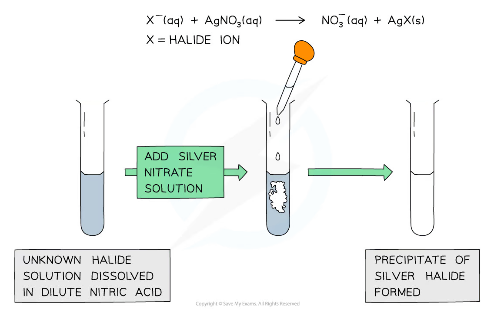
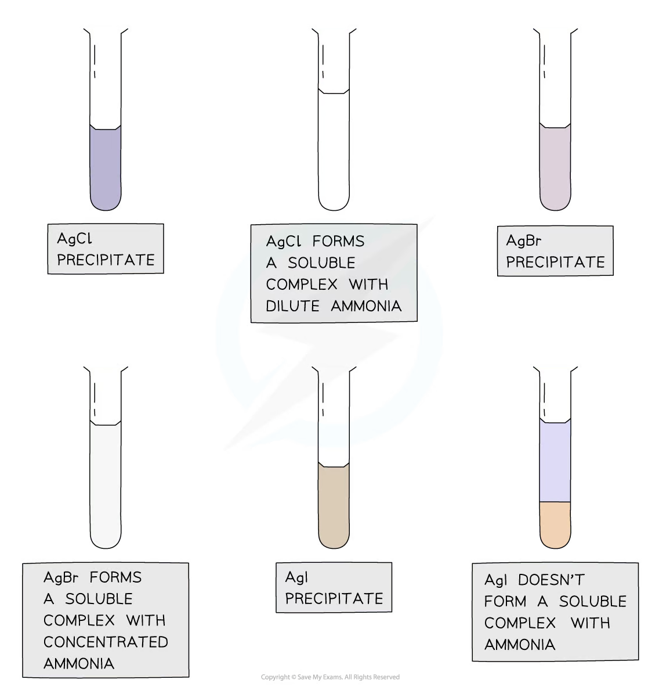
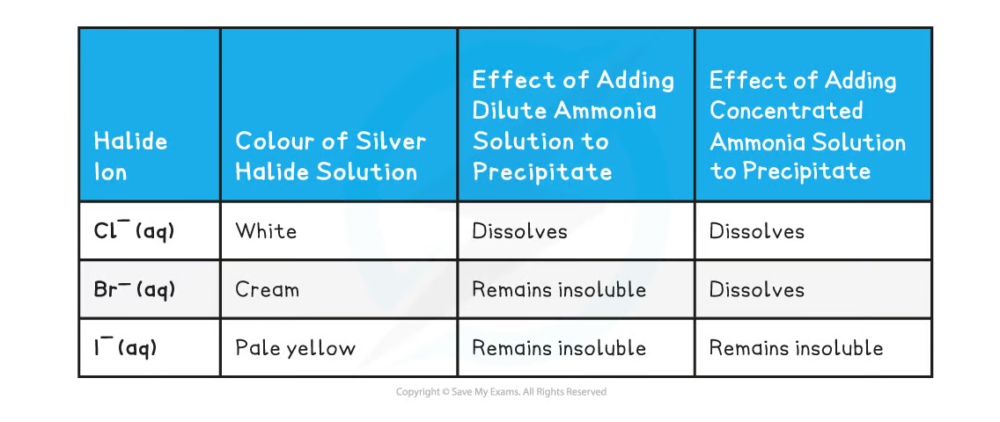
Hydrogen halides
Halogens react with hydrogen to form hydrogen halides：
\[ \ce{Cl2 + H2 -> 2HCl} \]
Hydrogen halides react with ammonia gas to form ammonium halide white smoke：
\[ \ce{NH3(g) + HCl(g) -> NH4Cl(s)} \]
In water，hydrogen chloride ionises completely：
\[ \ce{HCl(g) + H2O(l) -> H3O+(aq) + Cl-(aq)} \]
The same pattern can be used to predict hydrogen astatide in water：
\[ \ce{HAt(g) + H2O(l) -> H3O+(aq) + At-(aq)} \]
Exam checklist
Source note
本页内容来自项目内的 Note per Chapter/Note per Chapter/2.5 Group 7.pdf.pdf。PDF 中的 halogen trend graphs、disproportionation diagrams、concentrated sulfuric acid apparatus 和 silver halide test diagrams 已独立提取并统一处理为 white-background PNG，存放在 assets/notes/2-5-group-7/。